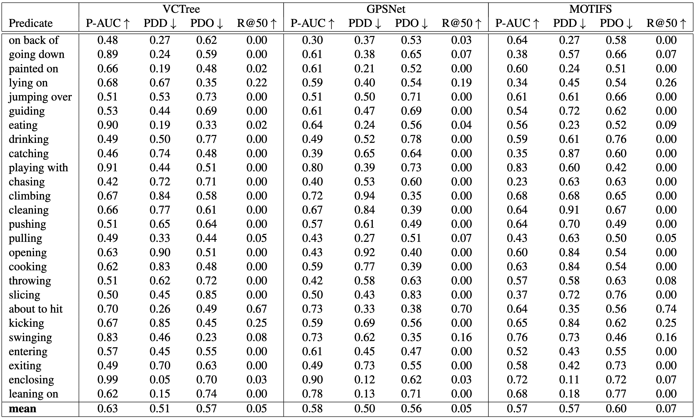

Current scene graph datasets suffer from a strong long-tail distributions of their predicate classes. Due to a very low number of some predicate classes in the test sets, no reliable metrics can be retrieved for the rarest classes. We construct a new panoptic scene graph dataset and a set of metrics that are designed as a benchmark for the predictive performance especially on rare predicate classes. To construct the new dataset, we propose a model-assisted an- notation pipeline that efficiently finds rare predicate classes that are hidden in a large set of images like needles in a haystack. Contrary to prior scene graph datasets, Haystack contains explicit negative annotations, i.e. annotations that a given relation does not have a certain predicate class. Negative annotations are helpful especially in the field of scene graph generation and open up a whole new set of possibilities to improve current scene graph generation models. Haystack is 100% compatible with existing panoptic scene graph datasets and can easily be integrated with existing evaluation pipelines.
An active learning inspired annotation pipeline that can be used to efficiently build scene graph datasets with a focus on rare predicate classes. We use modelassisted proposals to find rare predicate classes in a large set of unlabeled images.
With our pipeline, we build the Haystack scene graph dataset that contains about 25,000 relations with rare predicate classes for more than 11,300 images. It includes negative annotations and can be used for better model evaluation on rare predicate classes.
Positive annotations compared to PSG.
A set of metrics that provide more in-depth insights into results on rare predicates and which are used to compare existing approaches.
A comparison between our three novel metrics (P-AUC, PDD and PDO) and the traditionally used R@50 metric. The R@50 metric results in 0.0 for most predicates, while our metrics accurately measure the performance of each predicate.
The structure of this page is taken and modified from nvlabs.github.io/eg3d which was published under the Creative Commons CC BY-NC 4.0 license .